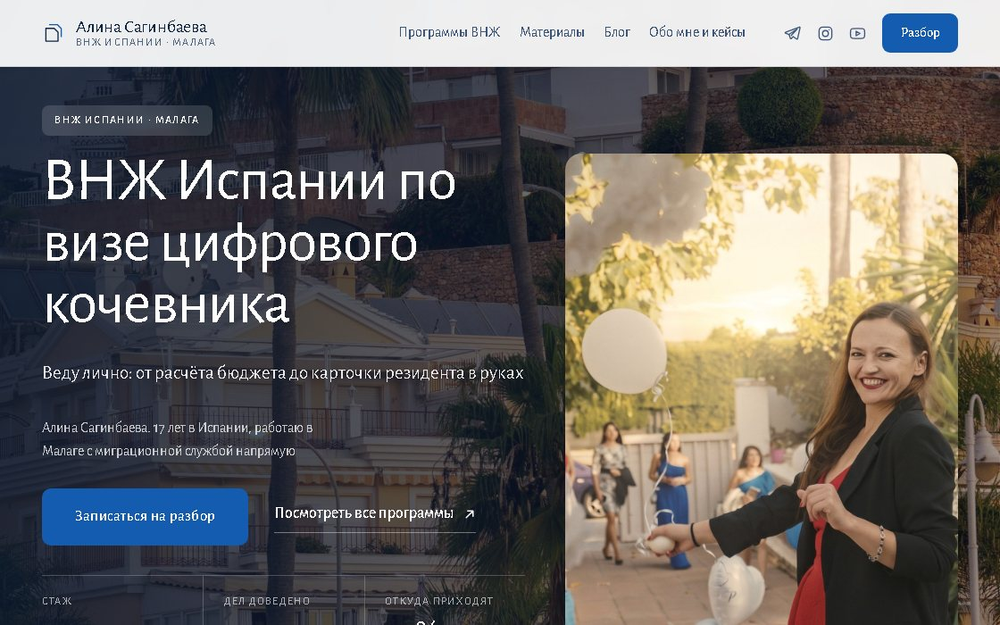

Юридическая практика · 2026
ВНЖ Испании
Сайт Алины Сагинбаевой для тех, кто планирует переезд в Испанию.

Задача
Помочь человеку сориентироваться в программах ВНЖ и подготовиться к разговору с юристом.
Что я сделал
Собрал страницы программ, материалы о переезде и кейсы Алины. Добавил переходы к записи на индивидуальный разбор.
Результат
Посетитель может сравнить программы Digital Nomad и StartUp, изучить опыт юриста и записаться на разбор своей ситуации.